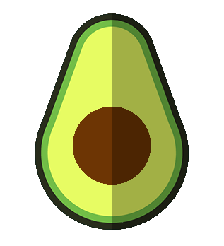
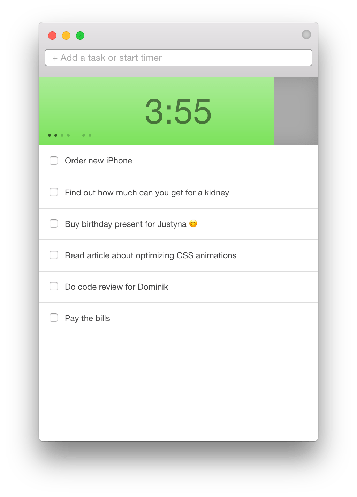

Avocado
Fine pomodoro timer for macOS
tasks list
fully usable with
keyboard only
collapsed mode
focus mode - concentrate on one task at a time
daily pomodoro goal
time remaining shown in menu bar
fits nicely in OS X look
Download
